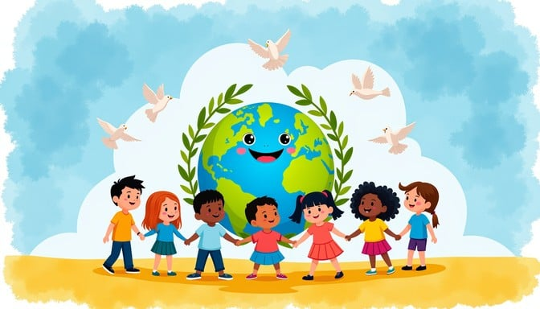

A Future of Peace

In this moment of rebuilding, the nations of the world must stand united in defending the rights and liberties of every human being. Lasting peace can only be secured through justice, dignity, and mutual respect among all peoples. Let us resolve that future generations shall live free from the fear of war and the oppression of tyranny. Together, we lay the foundation for a world where humanity, cooperation, and universal peace shall endure.